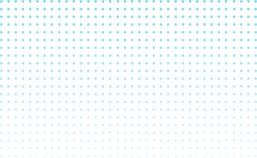

SUSTENTABILIDADE DIGITAL: PRÁTICAS TECNOLÓGICAS PARA UM FUTURO SUSTENTÁVEL

Você sabia que o desperdício de energia e o descarte inadequado de eletrônicos estão destruindo o meio ambiente?
SUSTENTABILIDADE DIGITAL: PRÁTICAS TECNOLÓGICAS PARA UM FUTURO SUSTENTÁVEL
Você sabia que o desperdício de energia e o descarte inadequado de eletrônicos estão destruindo o meio ambiente?
Menos de 20% dos dispositivos eletrônicos descartados no mundo são reciclados corretamente, e o consumo de energia digital global continua crescendo a um ritmo alarmante. O impacto ambiental do armazenamento de dados e da tecnologia é invisível, mas urgente: a sustentabilidade digital é essencial para um futuro mais verde.
A sustentabilidade digital no Brasil foca em economia de energia, reciclagem, uso consciente de dados, nuvem verde e descarte responsável.
Economia de Energia
Reciclagem e Reutilização
Uso Consciente de Dados
Nuvem Verde
Descarte Responsável
Embora a sustentabilidade digital avance, muitas soluções ainda consomem muita energia e recursos, como servidores em nuvem e reciclagem de eletrônicos. Além disso, elas nem sempre utilizam materiais ecológicos ou são acessíveis financeiramente, o que limita sua eficácia.
No Brasil, projetos de sustentabilidade digital muitas vezes enfrentam atrasos devido à complexidade da infraestrutura, como data centers em locais de difícil acesso.
O desperdício de recursos digitais e a falta de práticas sustentáveis podem comprometer o meio ambiente e prejudicar futuras gerações.
O uso irresponsável da tecnologia pode desbalancear todo o ecossistema digital e afetar o meio ambiente
O uso insustentável da tecnologia tornaria inviável o desenvolvimento de soluções digitais eficientes no futuro.
O consumo excessivo de recursos digitais levaria à obsolescência acelerada de tecnologias, prejudicando a inovação sustentável.
A degradação digital levaria ao colapso dos sistemas tecnológicos e sociais.
A falta de práticas digitais sustentáveis causaria um colapso econômico global.
Uma solução para a sustentabilidade digital é a adoção de tecnologias de eficiência energética e computação em nuvem sustentável. Existem várias abordagens, mas destacamos o uso de data centers ecológicos que reduzem o consumo de energia e o impacto ambiental.
A computação em nuvem sustentável é vantajosa por reduzir o consumo de energia, otimizar recursos e minimizar o impacto ambiental, promovendo uma tecnologia mais eficiente e ecológica.
A computação em nuvem sustentável consegue otimizar o uso de recursos e diminuir o consumo de energia, ajudando a reduzir a pegada de carbono e a promover uma tecnologia mais eficiente e ecológica.
A computação em nuvem sustentável oferece benefícios significativos tanto para as empresas quanto para o meio ambiente. Aqui estão algumas razões para adotá-la:
A nuvem permite o uso eficiente de energia, reduzindo o consumo de recursos em comparação com servidores tradicionais.
Data centers modernos otimizados para sustentabilidade utilizam fontes de energia renováveis, como solar e eólica, para diminuir o impacto ambiental.
A utilização de infraestrutura compartilhada na nuvem reduz a necessidade de hardware local, o que contribui para a redução de resíduos eletrônicos e o desperdício de recursos naturais.
Empresas podem escalar suas operações na nuvem conforme necessário, evitando a superutilização de recursos em momentos de baixa demanda.
Adotar práticas de computação em nuvem sustentável não só melhora a eficiência operacional, mas também contribui para um planeta mais saudável e para o cumprimento das metas globais de sustentabilidade.
A tecnologia sustentável protege nosso planeta para as futuras gerações
O futuro sustentável da tecnologia começa agora
Uma empresa de tecnologia sustentável desenvolverá e implementará soluções de computação em nuvem sustentável no Brasil